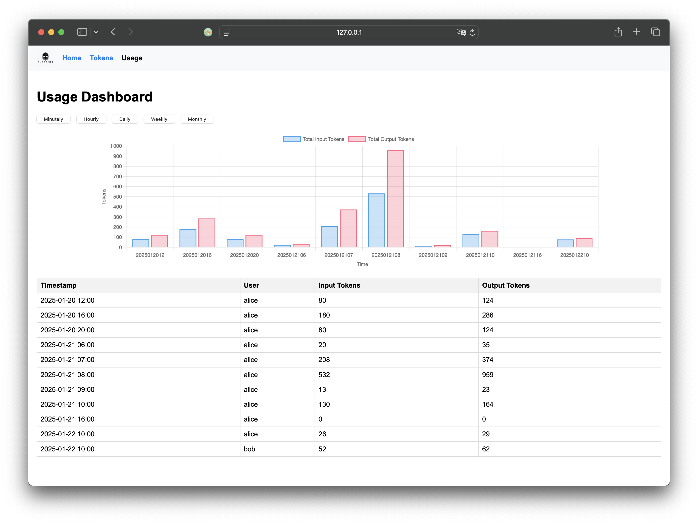
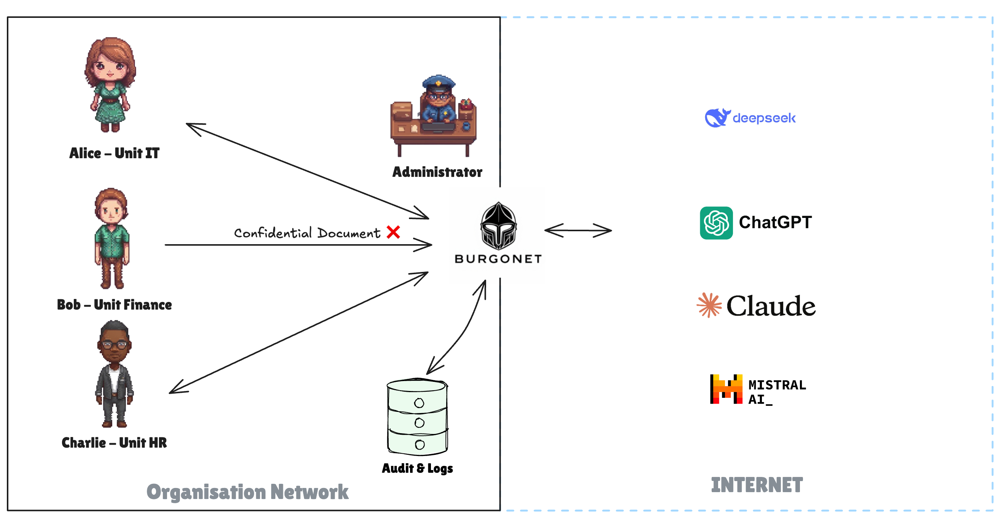
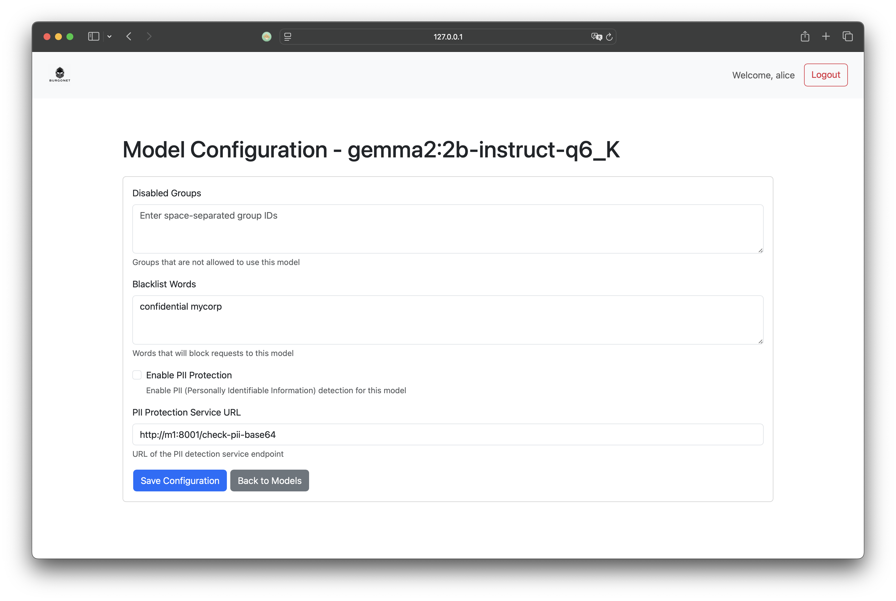

AI enterprise gateway implemented in Rust 🦀 that provides secure, governed access to LLMs (Large Language Models) for organizations. It acts as a single entry point for employees and projects to access both cloud-based and self-hosted AI models while enforcing security, compliance, and usage controls. The software helps organizations manage AI governance by providing centralized control over model access, usage tracking, and security policies.
Features
- 🔑 Token Management: Generate, view, and delete API tokens
- 🎯 Quota Management: Set token quotas per user, group or project
- 📊 Usage Monitoring: Real-time usage tracking and analytics
- 🤖 Provider Management: Configure multiple LLM providers (OpenAI, Claude, DeepSeek, Ollama, etc.)
- ⏱️ Rate Limiting: Built-in rate limiting with configurable thresholds
- 📝 Audit Logs: Detailed logging of API requests and responses
- 🖥️ Embedded Web UI: Built-in admin interface for configuration and monitoring
- 🔒 PII Protection: Built-in Personally Identifiable Information detection and blocking
- 📈 Prometheus Metrics: Built-in Prometheus endpoint for monitoring and alerting
- 🔐 Trusted Header Authentication: Support for authentication via trusted HTTP headers
- 🚫 Content Filtering: Block requests containing blacklisted words (e.g. "confidential")
- 🚷 Group Access Control: Restrict access by user groups with disabled_groups configuration
Need another feature? Don't hesitate to send an email or create a GitHub ticket!
Quick Links
Quickstart
Download the binary in the packages and the configuration file conf.yml file, run it :
./burgonet-gw -c conf.yml
Open in your browser the URL http://127.0.0.1:6189/

Use Cases
Explore common scenarios and configurations:
Departmental Access Control
Let's consider an organization with three departments:
| Department | Access Level | Restrictions |
|---|---|---|
| IT | All models | Quotas & rate limits |
| Finance | Self-hosted only | No external models |
| HR | All models | Unlimited budget |

- Alice works in the IT Department
- Bob works in the Finance Department
- Charlie works in the Human Resources Department
The organization's governance rules are configured as follows:
- The IT Department has access to all models, with quotas and rate limits
- The Finance Department does not have access to external models only self-hosted.
- The Human Resources Department has access to all models with unlimited budget
Restrict keywords
⚠️ Implemented, to be documented

Prevent leakage of personal idenfier & information leak
Note
⚠️ Implemented, to be documented
curl http://127.0.0.1:8080/ollama/gemma2/2b/ -i \
-H "Authorization: Bearer your-token-here" \
-d '{
"model": "gemma2:2b-instruct-q6_K", "messages": [
{
"role": "user",
"content": "Hi my name is Jean-Claude Dusse"
}
] ,
"stream": false
}'
HTTP/1.1 403 Forbidden
Server: openresty/1.21.4.1
Date: Thu, 16 Jan 2025 13:01:06 GMT
Content-Type: text/plain
Transfer-Encoding: chunked
Connection: keep-alive
Request contains sensitive personal information
Cost Management with Quotas
Administrators can effectively control costs by configuring quotas for model usage and user access.
Key Features:
- Per-Model Quotas: Set usage limits for individual models to manage resource allocation.
This granular approach allows administrators to optimize costs while maintaining flexibility and control over system resources.
models:
- location: "/echo"
model_name: "echo"
proxy_pass: "http://localhost:9999"
api_key: "$DEEPSEEK_API_KEY"
parser: "ollama"
disabled_groups: "mammals, birds"
blacklist_words: "confidential, mycorp"
pii_protection_url: "http://127.0.0.1:8001/check-pii-base64"
quotas:
- max_tokens:
minute: 500
hour: 6000
day: 10000
week: 40000
- max_requests:
second: 1
minute: 15